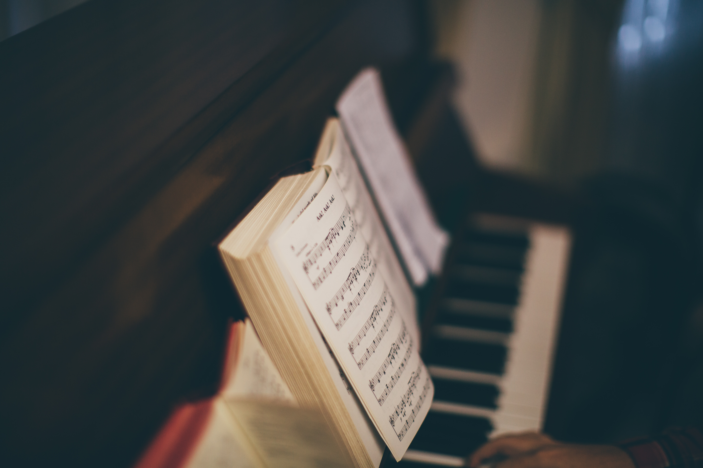

Hoạt động năng nổ và hiệu quả
Cháy hết mình trong các cuộc chơi
Giành những giải thưởng cao nhất
Hoạt động âm nhạc piano là một sân chơi nghệ thuật bổ ích, giúp học sinh nuôi dưỡng niềm đam mê âm nhạc và phát triển toàn diện cả về trí tuệ lẫn cảm xúc. Thông qua việc học và luyện tập piano, người tham gia không chỉ rèn luyện sự khéo léo của đôi tay, khả năng tập trung và tính kiên trì, mà còn học cách cảm thụ âm nhạc, thể hiện cảm xúc một cách tinh tế. Hoạt động piano còn tạo cơ hội giao lưu, biểu diễn và tự tin thể hiện bản thân, góp phần làm phong phú đời sống tinh thần và xây dựng môi trường học tập năng động, sáng tạo.
Buổi trình diễn piano là dịp để các bạn học sinh thể hiện tài năng, niềm đam mê và những cảm xúc tinh tế qua từng phím đàn. Trong không gian trang trọng nhưng ấm áp, những giai điệu du dương vang lên, đưa người nghe đến với nhiều cung bậc cảm xúc khác nhau. Đây không chỉ là một buổi biểu diễn âm nhạc mà còn là cơ hội để người chơi piano rèn luyện sự tự tin, bản lĩnh sân khấu và giao lưu, học hỏi lẫn nhau, góp phần lan tỏa tình yêu âm nhạc trong cộng đồng.